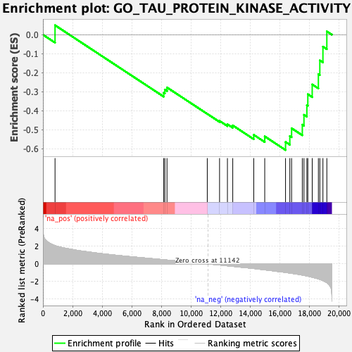
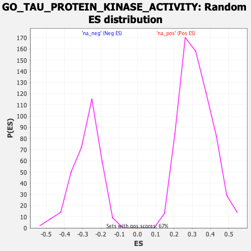

| | | Dataset | CK_basal |
| Phenotype | NoPhenotypeAvailable |
| Upregulated in class | na_neg |
| GeneSet | GO_TAU_PROTEIN_KINASE_ACTIVITY |
| Enrichment Score (ES) | -0.607751 |
| Normalized Enrichment Score (NES) | -2.163461 |
| Nominal p-value | 0.0 |
| FDR q-value | 0.021946479 |
| FWER p-Value | 0.203 |
Table: GSEA Results Summary

Fig 1: Enrichment plot: GO_TAU_PROTEIN_KINASE_ACTIVITY
Profile of the Running ES Score & Positions of GeneSet Members on the Rank Ordered List
| SYMBOL | RANK IN GENE LIST | RANK METRIC SCORE | RUNNING ES | CORE ENRICHMENT | | 1 | SIK3 | 817 | 2.079 | 0.0500 | No |
| 2 | MARK1 | 8160 | 0.468 | -0.3058 | No |
| 3 | CSNK1D | 8237 | 0.455 | -0.2896 | No |
| 4 | TTBK1 | 8381 | 0.433 | -0.2778 | No |
| 5 | PHKG2 | 11103 | 0.006 | -0.4170 | No |
| 6 | TTBK2 | 11933 | -0.123 | -0.4541 | No |
| 7 | PHKG1 | 12464 | -0.217 | -0.4717 | No |
| 8 | GSK3B | 12824 | -0.276 | -0.4779 | No |
| 9 | BRSK1 | 14242 | -0.524 | -0.5274 | No |
| 10 | FYN | 14985 | -0.673 | -0.5358 | No |
| 11 | GSK3A | 16390 | -0.966 | -0.5650 | Yes |
| 12 | BRSK2 | 16680 | -1.037 | -0.5340 | Yes |
| 13 | MARK3 | 16800 | -1.069 | -0.4929 | Yes |
| 14 | MARK4 | 17524 | -1.267 | -0.4740 | Yes |
| 15 | ROCK2 | 17635 | -1.304 | -0.4220 | Yes |
| 16 | TAOK1 | 17832 | -1.367 | -0.3716 | Yes |
| 17 | DYRK1A | 17896 | -1.389 | -0.3135 | Yes |
| 18 | MARK2 | 18193 | -1.510 | -0.2619 | Yes |
| 19 | ROCK1 | 18609 | -1.703 | -0.2079 | Yes |
| 20 | CDK5 | 18707 | -1.756 | -0.1353 | Yes |
| 21 | TAOK2 | 18917 | -1.886 | -0.0626 | Yes |
| 22 | PRKAA1 | 19181 | -2.121 | 0.0176 | Yes |
Table: GSEA details [plain text format]

Fig 2: GO_TAU_PROTEIN_KINASE_ACTIVITY: Random ES distribution
Gene set null distribution of ES for GO_TAU_PROTEIN_KINASE_ACTIVITY